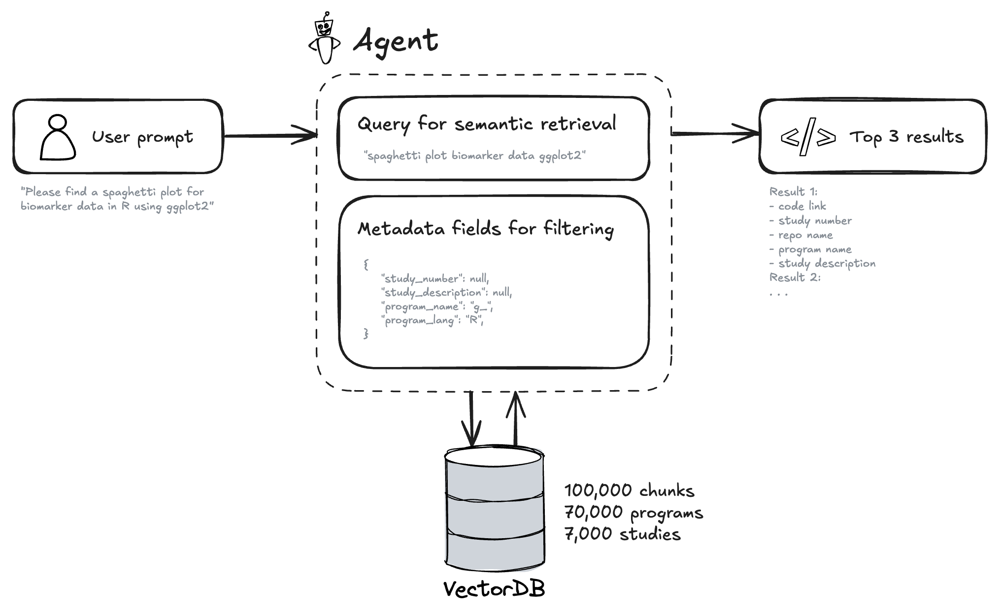
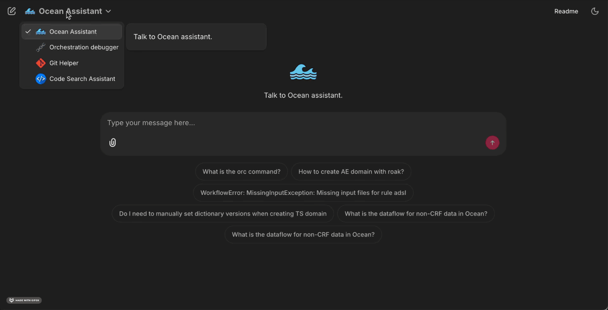

Disclaimer: This blog contains opinions that are of the authors alone and do not necessarily reflect the strategy of their respective organizations.
Why this matters for pharmaverse programmers
Clinical reporting is built on repeatable patterns for ADaM derivations, TLGs, and QC, but finding these patterns is a significant challenge. Relevant code is often scattered, and traditional keyword searches fail for non-standard logic because the underlying variable names and structural conventions differ from study to study. CSA directly addresses this root cause by using semantic retrieval to find code based on its conceptual intent, not just matching keywords (e.g: plain English query such as “derive ABLFL in ADLB using a pre-dose baseline rule and analysis-visit windows”). This means programmers can reliably discover, review, and reuse relevant patterns from across all repositories, saving substantial time and ensuring greater consistency in their work.
What we built?
CSA is a focused agent inside our Clinical Analysis Assistant. A user asks a question; we create an embedding of that query, apply optional metadata filters, search the vector database, and return the most relevant code chunks alongside their origins. CSA supports both SAS and R programs.

Behind the scenes, we index code from our repositories, split it into coherent chunks, and generate short summaries that describe what each piece of code does. We then convert these summaries into numerical representations called embeddings (or vectors), which capture their semantic meaning. This allows the system to find code based on the idea of what it does, not just keyword matching. We store these vectors in a specialized database (vector database) and retain rich metadata such as programming language, file name, repository, and study description. The interface displays both the results and the parameters used so retrieval stays transparent and audit-friendly.
Here is an example of chunk and its metadata stored in the vector database.
| Field | Content |
|---|---|
| Metadata: Program Name | t_vs_orth.R |
| Metadata: TLG Title | Summary of Orthostatic Change |
| Metadata: TLG Footnote | Result (Orthostatic Change) = Standing Vital Sign - Supine Vital Sign | The All Placebo column includes participants administered placebo from all cohorts. |
| Code (truncated) | library(magrittr)library(citril)library(chevron)… adam_db <- read_adam(parquet = arrow::read_parquet, select = c("adsl", "advs"))… adam_db[[dataset]] <- adam_db[[dataset]] %>%filter(.data$ANL01FL == "Y" & .data$AVISIT != "UNSCHEDULED" & .data$DTYPE == "AVERAGE"...)mutate(AVISIT = str_replace(.data$AVISIT, "BASELINE", "Baseline"), ...)… final_tlg <- citril::decorate_tlg(tlg_output, ...)export_tlg(final_tlg, file = output) |
| Semantic Summary | The R script t_vs_orth.R analyzes orthostatic changes in vital signs by calculating the difference between standing and supine measurements. It uses adam_db$adsl and adam_db$advs datasets, filters for relevant records (ANL01FL == "Y", AVISIT != "UNSCHEDULED", DTYPE == "AVERAGE"), calculates the CHG variable (change from baseline), standardizes visit labels, and creates a pooled “All” treatment category… The output table is exported in multiple formats with decorated titles and footnotes. |
| Embeddings (sample) | [0.023, -0.145, 0.089, 0.234, -0.067, 0.178, -0.023, 0.145, 0.312, -0.089, 0.156, -0.234, 0.067, 0.298, -0.178, 0.045, ...](768-dimensional vector - truncated for display) |
Image of the VectorDB and vectors.
How it works
Understand the ask
We transform user’s question into a semantic search query + metadata filters using the OpenAI agents software development kit.
Retrieve with context
We perform a semantic search over the vector database and apply substring matching based on the metadata filters. Summaries help match intent (“derive AVALC from PARAMCD”) even if the snippet uses different variable names. The metadata filters help to narrow down the results to the most relevant snippets (e.g: adsl in the program name or phase III in the study description). Code on the ‘devel’ branch has generally been QC’d in our setup, which is a nice feature for code reuse.
Return with provenance
Results show snippet text, file path, repo, and any available study metadata. You can jump to source for review and reuse.
Design principle: retrieval should be fast, explainable, and reproducible. It should be possible to trace back the code to the original source.
Example

What programmers can do today
With CSA, programmers can look up ADaM and TLG scripts by intent, such as “asking for an ADSL baseline flag with visit windowing” or “an AVALC mapping that treats missing values explicitly”. They can locate TLG programs described in plain English. For instance, a table that splits columns by treatment arm and summarizes AVAL with mean and standard deviation and then adapt a proven layout. They can also compare similar implementations across repositories to converge on a standard approach while maintaining confidence through clear provenance back to source.
Metrics and usage
Over the observation window (15th of September 2025 - 19th of October 2025), the Code Search Assistant (CSA) handled 791 questions from 45 unique users, averaging 42 ± 14 weekly conversations and 92 ± 43 weekly questions. Satisfaction signals were positive: the broader Clinical Analysis Assistant (CAA) scored 3.39/5 for usefulness (n = 174), while the CSA specifically was rated at ~4/5, indicating strong early traction among active users.
Limitations & what’s next
Today, CSA focuses on fast, trustworthy discovery. We are working on tighter IDE integration via MCP (Model Context Protocol - introduced by Anthropic) so you can search directly from your code editor (VSCode, RStudio, etc.). We also want to enable better study awareness so results are automatically filtered to the context of your study and clinical programming code. Finally, we are refining the data pipeline to continuously index changes without any manual effort and adding SDTM programs as well. These steps aim to make retrieval not only smarter but also more seamlessly woven into day-to-day programming.
Last updated
2026-04-08 21:02:55.318576
Details
Reuse
Citation
BibTeX citation:
@online{cayssol2026,
author = {Cayssol, Mathieu},
title = {Beyond {Keywords:} {How} {Semantic} {Search} Is {Unlocking}
{Clinical} {Code} {Reuse}},
date = {2026-03-20},
url = {https://pharmaverse.github.io/blog/posts/2026-03-20_beyond_key_words/beyond__keywords.html},
langid = {en}
}
For attribution, please cite this work as:
Cayssol, Mathieu. 2026. “Beyond Keywords: How Semantic Search Is
Unlocking Clinical Code Reuse.” March 20, 2026. https://pharmaverse.github.io/blog/posts/2026-03-20_beyond_key_words/beyond__keywords.html.